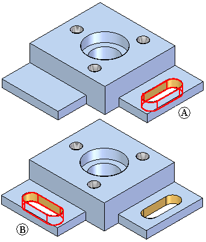

Cutting, copying, and pasting model elements
You can cut, copy, and paste part and model elements using the Windows clipboard. For example, you can copy the cutout feature (A), and then paste it to a new location on the part (B).

What gets copied?
-
Dimensions internal to the selected face set are copied along with the face set. The dimension need not be selected explicitly. Upon paste, the internal dimension is also pasted.
-
Dimensions that are dangling, that is, one end is within the select set and other is not, are also copied along with the face set. Such dimensions need not be selected explicitly. These dimensions are copied as dangling dimensions. After paste, dangling dimensions are also pasted. The dangling end of the dimension can be reattached or the dimension can be deleted.
-
Relationships internal to the selected face set are copied along with the face set. After paste, the internal relationship is recreated and shown in PathFinder. The copied set of relationships are a separate collection in the PathFinder.
-
PMI dimensions (system and user) attached to the copied elements are also copied (created) in the variable table on successful completion of Paste command.
Eligible element types
You can cut, copy, and paste the following element types:
-
Model faces
-
Solids
-
Surfaces
-
Face sets
-
Manufactured features
-
Occurrences
-
-
Sketches
-
Sketch elements
-
-
Reference objects
-
Reference planes
-
Base reference planes omitted from copy and cut operations
-
Coordinate systems
-
-
Bodies
You can select multiple objects to copy. You can have a mixed set of sketches, faces, manufactured features, and reference planes. If ineligible elements are found in the select set, an error message is displayed and you can remove the ineligible elements from the select set.
You can copy and paste elements from one source to many targets. For example, in synchronous documents, you can copy or cut from a part document and paste them to another part document. Any 3D elements copied or cut from the part document are filtered and will not be pasted.
In draft documents, 2D elements can be copied or cut and pasted to another draft document or to a synchronous part document. When pasting into a draft file, only the 2D elements are pasted. Any 3D elements are filtered from and not pasted. All sketch geometry is compressed to a single plane when pasted to a draft document.